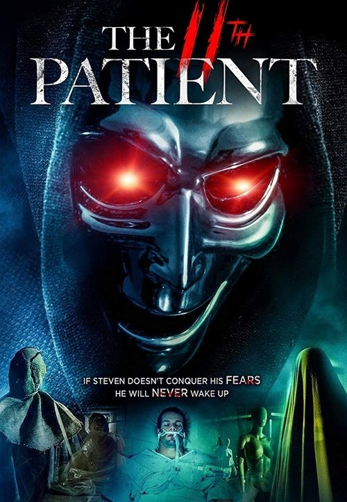

The 11th Patient (2018)
الوصف: Steven, A young teenage boy, is found in a comatose state deep in the woods several months after his kidnapping. The man that kidnapped him is still at large and Steven is the only person who witnessed and survived the ordeal. Now, Steven has been brought to a Doctor who specializes in PTSD patients. Using his technology to guide his patients though their traumatic event, he must connect to Steven and make him face his fears in order to bring him out of his coma.
الممثلون
- Shelly Cole (Michelle)
- Steven Cole (Steven)
- Andy Gates (Dr. Sobal)
- Liesel Kopp (Kate)
المخرج: Derek Cole
المنتج: Jason Kunke